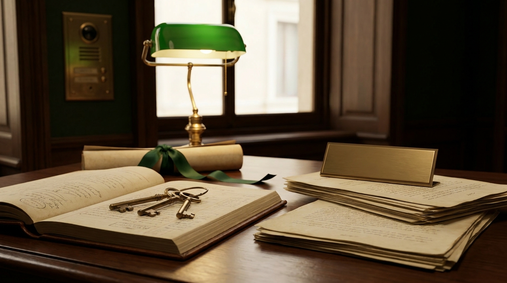

Vendita di casa e arretrati del portiere: chi paga i debiti condominiali
Chi compra un appartamento eredita anche gli arretrati del portiere lasciati dal venditore? Il Tribunale di Messina distingue tra obbligo di pagamento e ripartizione interna, ricordando che il debito grava su chi era proprietario al momento della prestazione. Una pronuncia utile a chi vende, compra o amministra, soprattutto sul tema spese legali e dissenso alla lite.

Il caso
Un condominio agisce per il recupero di somme dovute a titolo di servizio di portierato. Il debito si è formato quando l'immobile apparteneva al precedente proprietario. Dopo il rogito, il condominio si rivolge al nuovo acquirente. Il Tribunale di Messina interviene per chiarire un punto spesso frainteso: il subentro nella proprietà non implica automaticamente il subentro in tutti i debiti pregressi.
La decisione distingue due piani che nella pratica vengono confusi: il rapporto tra condominio e singolo condomino e il rapporto interno tra venditore e acquirente.
Inquadramento normativo
Il principio generale è quello della cosiddetta *ambulatorietà passiva*: l'obbligazione condominiale segue la titolarità della cosa. L'art. 63 disp. att. c.c. prevede infatti che chi subentra nei diritti di un condomino è obbligato in solido con lui per i contributi relativi all'anno in corso e a quello precedente. È un'eccezione, non la regola: oltre quel limite temporale, il debito resta a carico di chi era proprietario quando la spesa è maturata.
Le spese di portierato rientrano tra i contributi condominiali ordinari. Per esse vale dunque lo stesso criterio: il debito grava sul proprietario al momento in cui il servizio è stato reso. La vendita non trasferisce all'acquirente l'intero pregresso, ma solo l'eventuale solidarietà nei limiti dell'anno in corso e di quello precedente.
Il Tribunale richiama poi l'art. 1132 c.c. sul dissenso del condomino rispetto alle liti. La norma consente al condomino che non condivide una causa deliberata dall'assemblea di manifestare formalmente il proprio dissenso, separando la propria posizione dagli esiti economici negativi del giudizio. In mancanza di dissenso espresso, il condomino partecipa pro quota anche alle spese legali della lite, incluse quelle che si rivelino sfavorevoli al condominio.
Implicazioni pratiche
Per chi acquista, la lettura combinata delle norme produce un effetto concreto: l'acquirente non risponde di tutti gli arretrati storici, ma può essere chiamato in solido per le annualità più recenti. Il rischio non è teorico, perché il condominio tende a rivolgersi al soggetto più facilmente aggredibile, ossia il nuovo proprietario presente nei registri.
C'è un secondo profilo, spesso trascurato. Se il condominio avvia o prosegue una causa per il recupero e il condomino non esprime dissenso ai sensi dell'art. 1132 c.c., quel condomino non potrà poi pretendere il rimborso delle spese legali sostenute, neppure quando la lite riguardi un debito formatosi prima del suo acquisto. Il silenzio equivale ad adesione alle scelte processuali dell'assemblea.
Per il venditore, la pronuncia conferma che la cessione dell'immobile non cancella la responsabilità per i debiti maturati durante la sua proprietà. Chi vende resta esposto alle azioni di rivalsa dell'acquirente che abbia pagato in solido somme di sua competenza.
Cosa fare in concreto
- Richiedere prima del rogito la dichiarazione dell'amministratore sullo stato dei pagamenti, con indicazione di eventuali arretrati e contenziosi in corso (art. 1130, n. 9, c.c.).
- Inserire nel preliminare e nell'atto una clausola che ripartisca espressamente i debiti condominiali pregressi e disciplini la rivalsa tra le parti.
- Verificare l'esistenza di liti condominiali pendenti e valutare, in caso di adesione successiva al condominio, l'opportunità di manifestare dissenso scritto ai sensi dell'art. 1132 c.c. nei termini di legge.
- Trattenere a saldo o richiedere garanzia sul prezzo a copertura degli arretrati noti, evitando di pagare in solido senza tutele.
- Conservare ogni comunicazione con l'amministratore: in caso di azione del condominio, sarà la base per quantificare e contestare le somme effettivamente dovute.
La distinzione tra debito proprio e debito altrui non è formale. Incide sulla somma realmente esigibile e sulla possibilità di recuperare quanto pagato. Consigliamo di affrontare questi profili in fase di trattativa, quando il margine di negoziazione è ancora ampio, e non dopo l'arrivo del decreto ingiuntivo.
Disclaimer
Contributo informativo a cura di Tamburro & Partners - Avv. Giuseppe Tamburro. Non costituisce parere legale.
Ogni condominio ha una storia a sé.
Se gestisci un'amministrazione e vuoi un confronto su una specifica questione condominiale, scrivi allo studio. Ti rispondiamo entro un giorno lavorativo.